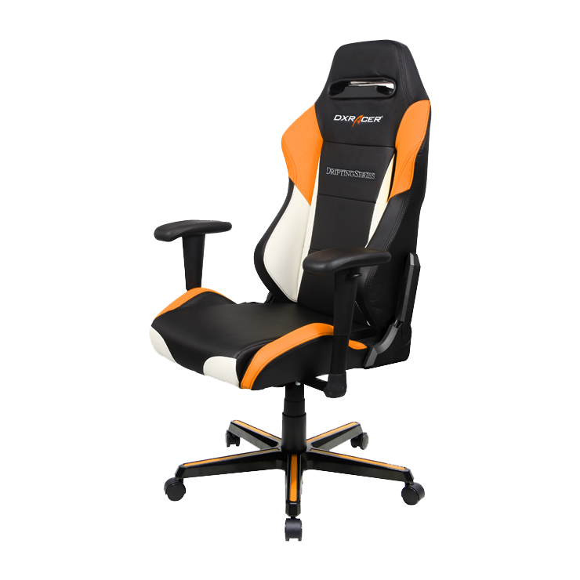

Categorias
Computadora, laptop, audifonos bluetooth, reloj inteligente, smartwatch, mouse, relojes, bocinas... y mas. Un post por cada uno.

La silla Gamer tiene ese nombre por un diseño novedoso y llamativo, lanzado para ser atractivo a jovenes al momento de jugar, pues parece asiento de vehiculo deportivo, con vinil o piel revestido en colores llamativos. Lo cierto es que, por su diseño ergonomico, pensado en volver comodas horas de juego (donde espalda y cuello son castigados), son un mobiliario muy comodo no solo para jugar, sino para cualquier estancia prolongada frente a la computadora, como las de una jornada de trabajo, con el plus de que su atractivo diseño al estar de moda puede decorar estancias y oficinas.
Suelen ser resistentes; todas cuentan con descansabrazos y a algunas hasta porta vasos; Su diseño ergnomico abarca toda la espalda para un mejor soporte y sus curvas 'abrazan' el torzo, ademas de ser ajustables en la altura e inclinacion, si se quere recostarse; por lo general tienen un cojin en la parte alta para dar descanso al cuello; algunas tienen cubirta acolchonada o en gel en el descansabrazo para mayor comodidad; las de gama mas alta cuentan con soporte para piernas al reclinarse, con un diseño bien balanceado para no caerse.
Computadora, laptop, audifonos bluetooth, reloj inteligente, smartwatch, mouse, relojes, bocinas... y mas. Un post por cada uno.